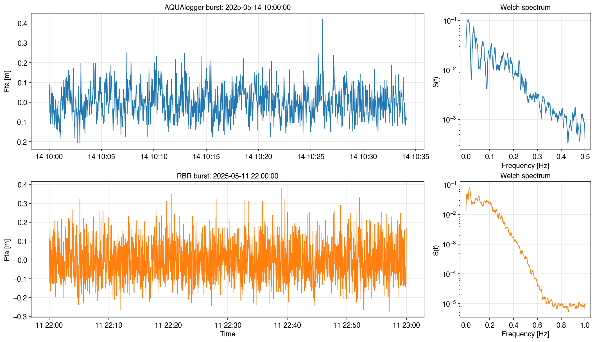

%load_ext autoreload
%autoreload 2
The autoreload extension is already loaded. To reload it, use:
%reload_ext autoreload
Walkthrough Example - Spectral Analysis#
Hint
Before using the WaveSpectralAnalyzer class, make sure you have the necessary data and dependencies installed. This example assumes you have time series data from an AQUAlogger and a RBR device.
Users are referred to the THIS LINK for a installation guide of the oceanicospy package and its dependencies.
This example demonstrates how to use the WaveSpectralAnalyzer class from the oceanicospy.analysis.spectral module to perform spectral analysis on wave data. We will compute the power spectral density of a two different surface level time series recorded with an AQUAlogger and a RBR device.
Importing required modules and subpackages#
For this example, the required subpackages from oceanicospy are imported, as well as some standard libraries for plotting and data manipulation.
from datetime import datetime, timedelta
import matplotlib.pyplot as plt
import numpy as np
import pandas as pd
from oceanicospy.observations.pressure_sensors import AQUAlogger, RBR
from oceanicospy.analysis import spectral
from oceanicospy.plots import *
Pressure data#
Deployment data from pressure sensors is loaded as a dictionary, while the sensor data is read from the corresponding sensor files. It has to be clarified that sensors are not deployed either at the same time or location.
measurement_pressure_sensors_paths = ['../data/observations/AQUAlogger/','../data/observations/RBR/']
sampling_AQ = dict(anchoring_depth=1,
sensor_height=0.2,
sampling_freq=1,
burst_length_s=2048,
start_time=datetime(2025,5,9,10,0,0),
end_time=datetime(2025,5,19,18,0,0)-timedelta(seconds=1))
sampling_RBR = dict(anchoring_depth=1,
sensor_height=0.2,
sampling_freq=2,
burst_length_s=7200,
start_time=datetime(2025,5,9,10,0,0),
end_time=datetime(2025,5,19,18,0,0)-timedelta(seconds=0.5))
Each type of sensor is treated as a object and its methods are used to retrieve the raw and clean data. For further information about how to upload the sensor data using oceanicospy, please refer to the data loading example.
sampling_data = [sampling_AQ,sampling_RBR]
metadata_list=['AQ','RBR']
dict_raw_measurements = dict()
dict_clean_measurements = dict()
for idx,measurement_path in enumerate(measurement_pressure_sensors_paths):
if 'AQ' in measurement_path:
object_device = AQUAlogger(measurement_path, sampling_data[idx], filename='AQUAlogger_520PT5.csv')
else:
object_device = RBR(measurement_path,sampling_data[idx])
raw_data = object_device.get_raw_records()
clean_data = object_device.get_clean_records()
dict_raw_measurements[metadata_list[idx]] = raw_data
dict_clean_measurements[metadata_list[idx]] = clean_data
A quick look at the data shows that the pressure signal is sampled at 1Hz for the AQ sensor and 2Hz for the RBR sensor. The raw records contain the original columns from the sensor files, which may have different names and formats.
dict_raw_measurements['AQ'].head()
| units | date | pressure[raw] | pressure[bar] | depth[raw] | depth[m] | [] | |
|---|---|---|---|---|---|---|---|
| 0 | BURSTSTART | 5/9/2025 06:00:00 AM | 32820 | 1.001880 | 0 | -0.247502 | NaN |
| 1 | DATA | 5/9/2025 06:00:01 AM | 32820 | 1.001880 | 0 | -0.247502 | NaN |
| 2 | DATA | 5/9/2025 06:00:02 AM | 32819 | 1.001735 | 0 | -0.250864 | NaN |
| 3 | DATA | 5/9/2025 06:00:03 AM | 32822 | 1.002169 | 0 | -0.240797 | NaN |
| 4 | DATA | 5/9/2025 06:00:04 AM | 32820 | 1.001880 | 0 | -0.247502 | NaN |
dict_raw_measurements['RBR'].head()
| Time | Pressure | Sea pressure | Depth | |
|---|---|---|---|---|
| 0 | 2025-05-09 06:00:00.000 | 10.080782 | -0.051719 | -0.051297 |
| 1 | 2025-05-09 06:00:00.500 | 10.080982 | -0.051518 | -0.051098 |
| 2 | 2025-05-09 06:00:01.000 | 10.081144 | -0.051356 | -0.050937 |
| 3 | 2025-05-09 06:00:01.500 | 10.080991 | -0.051509 | -0.051089 |
| 4 | 2025-05-09 06:00:02.000 | 10.081048 | -0.051452 | -0.051032 |
The clean records are then obtained by applying the get_clean_records method of the PressureSensor class, which performs several processing steps to prepare the data for analysis. This includes standardizing column names, parsing dates, computing depth from pressure, and assigning burst IDs.
dict_clean_measurements['AQ'].head()
| pressure[bar] | depth[m] | depth_aux[m] | burstId | eta[m] | |
|---|---|---|---|---|---|
| date | |||||
| 2025-05-09 10:00:00 | 1.245722 | 3.136509 | 2.307327 | 1 | 0.052596 |
| 2025-05-09 10:00:01 | 1.244709 | 3.124966 | 2.297273 | 1 | 0.041052 |
| 2025-05-09 10:00:02 | 1.237181 | 3.039040 | 2.222556 | 1 | -0.044874 |
| 2025-05-09 10:00:03 | 1.243695 | 3.113418 | 2.287209 | 1 | 0.029503 |
| 2025-05-09 10:00:04 | 1.253249 | 3.222086 | 2.382034 | 1 | 0.138170 |
dict_clean_measurements['RBR'].head()
| pressure[bar] | depth[m] | burstId | eta[m] | |
|---|---|---|---|---|
| date | ||||
| 2025-05-09 10:00:00.000 | 1.241829 | 2.267149 | 1 | 0.117985 |
| 2025-05-09 10:00:00.500 | 1.239702 | 2.246051 | 1 | 0.096886 |
| 2025-05-09 10:00:01.000 | 1.235314 | 2.202530 | 1 | 0.053365 |
| 2025-05-09 10:00:01.500 | 1.233978 | 2.189276 | 1 | 0.040110 |
| 2025-05-09 10:00:02.000 | 1.234466 | 2.194119 | 1 | 0.044954 |
Using the WaveSpectralAnalyzer class#
First, we need to instanciate the WaveSpectralAnalyzer class, which will allow us to make the spectral analysis for the surface elevation data (originally taken from the pressure records). We need to provide the measured signal and the sampling data as arguments.
WaveSpectralAnalyzer will look for measurement signal with a column named eta[m], which is the standard name for the sea surface elevation in oceanicospy. If the column name is different, it can be specified as an argument when instanciating the class.
help(spectral.WaveSpectralAnalyzer)
Help on class WaveSpectralAnalyzer in module oceanicospy.analysis.spectral:
class WaveSpectralAnalyzer(builtins.object)
| WaveSpectralAnalyzer(measured_signal, sampling_data, surface_level_column='eta[m]', logger=True)
|
| Methods defined here:
|
| __init__(self, measured_signal, sampling_data, surface_level_column='eta[m]', logger=True)
| Initializes the analysis object with measurement signal and sampling data.
|
| Parameters
| ----------
| measured_signal : array-like
| The input signal data to be analyzed.
| sampling_data : dict
| Dictionary containing sampling parameters with the following keys:
| - ``sampling_freq`` (float): Sampling frequency of the signal.
| - ``anchoring_depth`` (float): Depth at which the sensor is anchored.
| - ``sensor_height`` (float): Height of the sensor above the bottom.
| - ``burst_length_s`` (float): Duration of each burst in seconds.
| surface_level_column : str
| Column name in measured_signal that contains the surface level data (default is ``eta[m]``).
| logger : bool
| If True, initializes a logger for the class (default is True).
|
| Notes
| -----
| - 01-Ago-2025 : Origination - Franklin Ayala
| - 01-Sep-2025 : FFT method - Juan Diego Toro
| - 10-Oct-2025 : Kp correction - Franklin Ayala/Juan Diego Toro/Camilo Cabrera
| - 12-Nov-2025 : Welch's method - Franklin Ayala
| - 10-Dec-2025 : Wavelets analysis - Franklin Ayala
|
| compute_spectrum_from_direct_fft(self, signal, kp_correction)
| Computes the density variance spectrum based on the Fast Fourier transform.
|
| Parameters
| ----------
| signal : list or ndarray
| An array of the signal
| kp_correction : bool
| If True, applies Kp correction to the spectrum.
|
| Returns
| -------
| freqs: ndarray
| Frequency of the spectrum
| PSD : ndarray
| Density variance spectrum
| PSD_kp : ndarray (optional)
| Density variance spectrum corrected by Kp
|
| Notes
| -----
| Based on https://currents.soest.hawaii.edu/ocn_data_analysis/_static/Spectrum.html
|
| compute_spectrum_from_welch(self, signal, kp_correction, window_type, window_length, overlap=None)
| Compute PSD using Welch method and smooth across frequency bins.
|
| Parameters
| ----------
| signal : ndarray
| 1D numpy array containing the signal.
| kp_correction : bool
| If True, applies Kp correction to the spectrum.
| window_type : str, optional
| Type of window to use (default is ``'hamming'``).
| Can be any window name supported by scipy.signal.windows, e.g.,
| ``'hann'``, ``'blackman'``, ``'boxcar'``, etc.
| window_length : int
| Length of the Hamming window in samples.
| overlap: int, optional
| Number of overlapping samples between segments (default is half of window_length).
|
| Returns
| -------
| freqs : ndarray
| Frequency array.
| PSD : ndarray
| Power spectral density.
| PSD_kp : ndarray (optional)
| Density variance spectrum corrected by Kp
|
| compute_wavelet_scalograms(self, mother_wavelet, points_scale, burst_mode=False, window_length=None, overlap=None)
| Compute wavelet scalograms for all bursts in the measurement signal.
|
| Parameters
| ----------
| mother_wavelet : str
| The mother wavelet to use (e.g., ``'morl'``, ``'cmor'``, etc.).
| points_scale : int
| The number of frequency points
| burst_mode : bool, optional
| If True, computes scalograms for each burst separately using overlapping windows. Default is False.
| If False, computes a single scalogram for the entire measurement signal without windowing.
| window_length : int, optional
| The length of each window in samples (required if ``burst_mode`` is True). Default is None.
| overlap : float, optional
| The overlap between consecutive windows (required if ``burst_mode`` is True). Default is None.
|
| Returns
| -------
| coefs_all : ndarray
| The computed wavelet scalograms for all bursts.
| freqs : ndarray
| The corresponding frequencies in Hz.
|
| Raises
| ------
| ValueError
| If ``burst_mode`` is True and ``window_length`` or ``overlap`` is not provided.
| If ``burst_mode`` is True and ``'burstId'`` column is missing in the measurement signal.
|
| correction_by_Kp(self, freqs, PSD, kp_method='adaptive')
| Apply Kp correction to the power spectral density (PSD) based on the specified method.
|
| Parameters
| ----------
| freqs : ndarray
| Frequency array corresponding to the PSD.
| PSD : ndarray
| Power spectral density to be corrected.
| kp_method : str, optional
| Method for Kp correction: ``'adaptive'`` or ``'nonadaptive'``. Default is ``'adaptive'``
|
| Returns
| -------
| freqs : ndarray
| Frequency array corresponding to the PSD.
| PSD_Kp : ndarray
| The Kp-corrected power spectral density.
| PSD : ndarray
| The original power spectral density (returned for reference).
|
| Notes
| -----
| Most of the equations used on the methods are based on [1]_
|
| .. [1] Karimpour, A., & Chen, Q. (2017). Wind wave analysis in depth limited water using OCEANLYZ,
| A MATLAB toolbox. Computers & Geosciences, 106, 181-189. https://doi.org/10.1016/j.cageo.2017.06.010
|
| get_spectra_and_params_for_bursts(self, method, kp_correction=True, ig_split=False, freq_split=None, window_type=None, window_length=None, overlap=None, smoothing_bins=None)
| Compute wave spectra and integral parameters for each burst in the measurement signal.
|
| Parameters
| ----------
| method : str
| Spectrum computation method: ``'fft'`` or ``'welch'``.
| kp_correction : bool, optional
| Whether to apply Kp pressure correction. Default is True.
| ig_split : bool, optional
| Whether to compute infragravity and wind wave Hm0 separately. Default is False.
| freq_split : float, optional
| Frequency that separates infragravity from short waves (required if ``ig_split`` is True). Default is None.
| window_type : str, optional
| Window type for Welch method (e.g., ``'hamming'``, ``'hann'``). Default is None.
| window_length : int, optional
| Window length for Welch method in samples. Default is None.
| overlap : int, optional
| Number of overlapping samples for Welch method. Default is None.
| smoothing_bins : int, optional
| Number of bins for moving-average smoothing (Welch only). Default is None.
|
| Returns
| -------
| wave_spectra_data : dict
| Dictionary with keys:
|
| - ``S``: ndarray of shape (n_bursts, n_freqs) containing power spectral densities.
| - ``freq``: ndarray of frequency values.
| - ``dir``: empty list (placeholder for directional info).
| - ``time``: DatetimeIndex of hourly timestamps.
| wave_params_data : pd.DataFrame
| Wave parameters indexed by time, with columns:
|
| - ``Hm0``: Zero-moment wave height [m].
| - ``Hrms``: Root-mean-square wave height [m].
| - ``Hmean``: Mean wave height [m].
| - ``Tp``: Peak period [s].
| - ``Tm01``: Mean period (first moment) [s].
| - ``Tm02``: Mean period (second moment) [s].
| - ``Hm0_ig``: Infragravity wave height [m] (if ig_split is True).
| - ``Hm0_sw``: Short wave height [m] (if ig_split is True).
|
| Raises
| ------
| ValueError
| If ``burstId`` column is missing in the measurement signal.
|
| get_wave_params_from_spectrum(self, PSD, freqs)
| This function computes different wave integral parameters from the spectrum
|
| Parameters
| ----------
| PSD : list or ndarray
| Density variance spectrum
| freqs : list or ndarray
| Frequencies of the spectrum
|
| Returns
| -------
| Hs : float
| Significant wave height [m]
| Hrms : float
| Root-mean squared wave height [m]
| Hmean : float
| Mean wave height [m]
| Tp : float
| Peak period [s]
| Tm01 : float
| Mean period - first order [s]
| Tm02 : float
| Mean period - second order [s]
|
| ----------------------------------------------------------------------
| Data descriptors defined here:
|
| __dict__
| dictionary for instance variables (if defined)
|
| __weakref__
| list of weak references to the object (if defined)
Welch’s and FFT method#
First, we can use the get_spectra_and_params_for_bursts method to compute the spectra and wave parameters for the bursts in the data. This method has two options to process the data in spectral terms: Welch’s method and FFT.
dict_spectra_welch = dict()
dict_integral_params_welch = dict()
dict_spectra_fft = dict()
dict_integral_params_fft = dict()
for idx,metadata in enumerate(metadata_list):
SpectralAnalyzer = spectral.WaveSpectralAnalyzer(dict_clean_measurements[metadata],sampling_data[idx])
print(type(SpectralAnalyzer))
spectra_welch,params_welch = SpectralAnalyzer.get_spectra_and_params_for_bursts(method='welch',kp_correction=False,ig_split=True,
freq_split=0.04, window_type='hamming',
window_length=1024,overlap=512,smoothing_bins=6)
spectra_fft,params_fft = SpectralAnalyzer.get_spectra_and_params_for_bursts(method='fft',kp_correction=False,ig_split=True,
freq_split=0.04)
dict_spectra_welch[metadata_list[idx]] = spectra_welch
dict_integral_params_welch[metadata_list[idx]] = params_welch
dict_spectra_fft[metadata_list[idx]] = spectra_fft
dict_integral_params_fft[metadata_list[idx]] = params_fft
<class 'oceanicospy.analysis.spectral.WaveSpectralAnalyzer'>
<class 'oceanicospy.analysis.spectral.WaveSpectralAnalyzer'>
Plotting random bursts and their corresponding spectra#
The time series and spectra for a random burst are plotted for each sensor and method. The spectra are plotted in log scale to better visualize the different frequency components.
burst_to_plot = 61
AQ_df = dict_clean_measurements["AQ"]
RBR_df = dict_clean_measurements["RBR"]
AQ_burst = AQ_df[AQ_df["burstId"] == burst_to_plot]
RBR_burst = RBR_df[RBR_df["burstId"] == burst_to_plot]
AQ_freq = dict_spectra_welch["AQ"]["freq"]
RBR_freq = dict_spectra_welch["RBR"]["freq"]
AQ_S = dict_spectra_welch["AQ"]["S"][burst_to_plot-1]
RBR_S = dict_spectra_welch["RBR"]["S"][burst_to_plot-1]
fig = plt.figure(figsize=(14, 8), constrained_layout=True)
gs = fig.add_gridspec(2, 4)
ax_AQ_timeseries = fig.add_subplot(gs[0, 0:3])
ax_AQ_spectra = fig.add_subplot(gs[0, 3])
ax_RBR_timeseries = fig.add_subplot(gs[1, 0:3])
ax_RBR_spectra = fig.add_subplot(gs[1, 3])
# AQ time series
ax_AQ_timeseries.plot(AQ_burst["eta[m]"], lw=1.0)
ax_AQ_timeseries.set(ylabel="Eta [m]",title = f"AQUAlogger burst: {AQ_burst.index[0].strftime('%Y-%m-%d %H:%M:%S')}")
ax_AQ_timeseries.grid(True, alpha=0.3)
# AQ spectrum
ax_AQ_spectra.plot(AQ_freq, AQ_S, lw=1.2)
ax_AQ_spectra.set(xlabel="Frequency [Hz]", ylabel="S(f)", title="Welch spectrum", yscale="log")
ax_AQ_spectra.grid(True, alpha=0.3)
# RBR time series
ax_RBR_timeseries.plot(RBR_burst.index, RBR_burst["eta[m]"], lw=1.0, color="tab:orange")
ax_RBR_timeseries.set(xlabel="Time", ylabel="Eta [m]",title=f"RBR burst: {RBR_burst.index[0].strftime('%Y-%m-%d %H:%M:%S')}")
ax_RBR_timeseries.grid(True, alpha=0.3)
# RBR spectrum
ax_RBR_spectra.plot(RBR_freq, RBR_S, lw=1.2, color="tab:orange")
ax_RBR_spectra.set(xlabel="Frequency [Hz]", ylabel="S(f)", title="Welch spectrum", yscale="log")
ax_RBR_spectra.grid(True, alpha=0.3)
# plt.show()

Note that the upper limit for each spectra is different for each sensor, followingthe Nyquist theorem. The AQ sensor has a sampling frequency of 1Hz, while the RBR sensor has a sampling frequency of 2Hz.
Wavelets transform#
Another feature of the WaveSpectralAnalyzer class is the possibility to compute the wavelet transform of the signal, which allows to analyze the signal in both time and frequency domains. The compute_wavelet_scalograms method allows to compute wavelets coefficient given a mother wavelet and a range of scales. Methods to compute the scalogram for each burst and continuous data are currently supported.
dict_coef_wavelets = dict()
dict_freqs_wavelets = dict()
for idx,metadata in enumerate(metadata_list):
SpectralAnalyzer = spectral.WaveSpectralAnalyzer(dict_clean_measurements[metadata],sampling_data[idx])
print(type(SpectralAnalyzer))
if 'AQ' in metadata:
coef_wavelets,freqs_wavelets = SpectralAnalyzer.compute_wavelet_scalograms(mother_wavelet='cmor1.5-1.0',points_scale=50,burst_mode=True,
window_length=sampling_data[idx]['burst_length_s'],overlap=1)
coef_wavelets = np.stack(coef_wavelets, axis=0)
coef_wavelets_full = coef_wavelets.transpose(1, 0, 2).reshape(len(freqs_wavelets), -1)
else:
coef_wavelets_full,freqs_wavelets = SpectralAnalyzer.compute_wavelet_scalograms(mother_wavelet='cmor1.5-1.0',points_scale=50)
dict_coef_wavelets[metadata_list[idx]] = coef_wavelets_full
dict_freqs_wavelets[metadata_list[idx]] = freqs_wavelets
<class 'oceanicospy.analysis.spectral.WaveSpectralAnalyzer'>
<class 'oceanicospy.analysis.spectral.WaveSpectralAnalyzer'>
---------------------------------------------------------------------------
KeyboardInterrupt Traceback (most recent call last)
Cell In[28], line 13
11 coef_wavelets_full = coef_wavelets.transpose(1, 0, 2).reshape(len(freqs_wavelets), -1)
12 else:
---> 13 coef_wavelets_full,freqs_wavelets = SpectralAnalyzer.compute_wavelet_scalograms(mother_wavelet='cmor1.5-1.0',points_scale=50)
14 dict_coef_wavelets[metadata_list[idx]] = coef_wavelets_full
15 dict_freqs_wavelets[metadata_list[idx]] = freqs_wavelets
File ~/Documents/projects/oceanicospy/oceanicospy/analysis/spectral.py:606, in WaveSpectralAnalyzer.compute_wavelet_scalograms(self, mother_wavelet, points_scale, burst_mode, window_length, overlap)
603 scales = f_c / (frequencies * dt)
605 if not burst_mode:
--> 606 coeffs, freqs = pywt.cwt(self.measured_signal[self.surface_level_column].values,scales,
607 wavelet=mother_wavelet, sampling_period=1/self.sampling_freq)
608 coeffs_mag = np.abs(coeffs)
609 return coeffs_mag,freqs
File ~/venvs/oceanicospy-dev-ffayalac/lib/python3.10/site-packages/pywt/_cwt.py:161, in cwt(data, scales, wavelet, sampling_period, method, axis)
159 if method == 'conv':
160 if data.ndim == 1:
--> 161 conv = np.convolve(data, int_psi_scale)
162 else:
163 # batch convolution via loop
164 conv_shape = list(data.shape)
File ~/venvs/oceanicospy-dev-ffayalac/lib/python3.10/site-packages/numpy/_core/numeric.py:869, in convolve(a, v, mode)
867 if len(v) == 0:
868 raise ValueError('v cannot be empty')
--> 869 return multiarray.correlate(a, v[::-1], mode)
KeyboardInterrupt:
A quick look at the dictionaty that constains the wavelet coefficients and frequencies shows that the wavelet transform has been computed for both sensors. The frequencies are also stored in a separate dictionary.
For the AQ sensor, the original expected shape of the wavelet coefficients is (number of bursts, number of frequencies, number of time points in each burst), but the coefficients are reshaped to have a shape of (number of frequencies, number of time points across all bursts) to be able to compare it with the RBR sensor.
The expected shape for RBR is (number of frequencies, number of time points in the continuous signal).
dict_coef_wavelets['RBR'].shape
Plotting the wavelet scalogram#
Because of length of the signal, this plot might take a while to be generated. The upper plot shows the wavelet scalogram for the AQ sensor, while the lower plot shows the scalogram for the RBR sensor. The gaps in the AQ scalogram are due to the fact that the wavelet transform was computed for each burst, while the RBR scalogram is continuous. The colorbar shows the magnitude of the wavelet coefficients in log scale. The frequencies are plotted in log scale to better visualize the different frequency components.
# fig,[ax1, ax2] = plt.subplots(2,1,figsize=(14,6))
# for idx, key in enumerate(list(dict_coef_wavelets.keys())):
# print(key)
# # ---- Computing time dimension ---------- #
# sampling = sampling_data[idx]
# if 'AQ' in key:
# start_time = sampling['start_time']
# end_time = sampling['end_time']
# time_full = pd.date_range(start=start_time, end=end_time, freq='1s')
# else:
# time = pd.date_range(start=sampling['start_time'], end=sampling['end_time'], freq=f'{int(1000/sampling["sampling_freq"])}ms')
# # ---- Computing time dimension ---------- #
# periods = 1.0 / dict_freqs_wavelets['RBR']
# seconds_per_burst = 7200
# valid_per_burst = 2048
# if 'AQ' in key:
# n_bursts = dict_coef_wavelets['AQ'].shape[1] // valid_per_burst
# full_blocks = []
# for b in range(n_bursts):
# start = b * valid_per_burst
# end = (b + 1) * valid_per_burst
# block_valid = dict_coef_wavelets['AQ'][:, start:end] # shape (n_freqs, 2048)
# block_full = np.full((dict_coef_wavelets['AQ'].shape[0], seconds_per_burst), np.nan)
# block_full[:, :valid_per_burst] = block_valid
# full_blocks.append(block_full)
# coeffs_full = np.hstack(full_blocks)
# cmap = plt.cm.magma_r.copy()
# cmap.set_bad('white')
# cax = ax1.pcolormesh(time_full,periods,coeffs_full,cmap=cmap,vmin=0,vmax=0.3,shading='auto')
# ax1.set(ylabel='Period [s]',yscale='log',ylim=(1000,5),yticks=[1000,100,10],yticklabels=['1000','100','10'])
# cbar_ax = fig.add_axes([0.4, 0.01, 0.3, 0.01]) # [left, bottom, width, height]
# cb = plt.colorbar(cax, cax=cbar_ax,extend='max',orientation='horizontal')
# cb.set_label('S [$m^2s$]', labelpad=0.1)
# cb.set_ticks([0, 0.1, 0.2, 0.3])
# else:
# cax = ax2.pcolormesh(time,periods,dict_coef_wavelets['RBR'],cmap='magma_r',vmin=0,vmax=0.3,shading='auto')
# ax2.set(ylabel='Period [s]',yscale='log',ylim=(1000,1),yticks=[1000,100,10,1],yticklabels=['1000','100','10','1'])